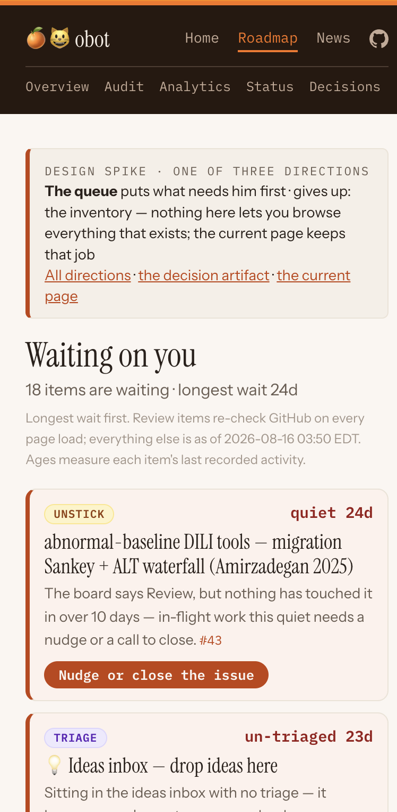
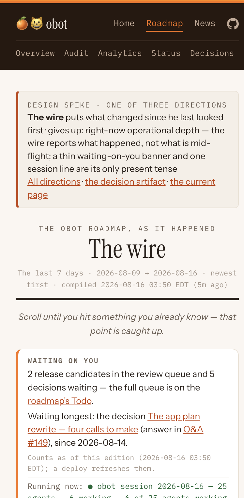
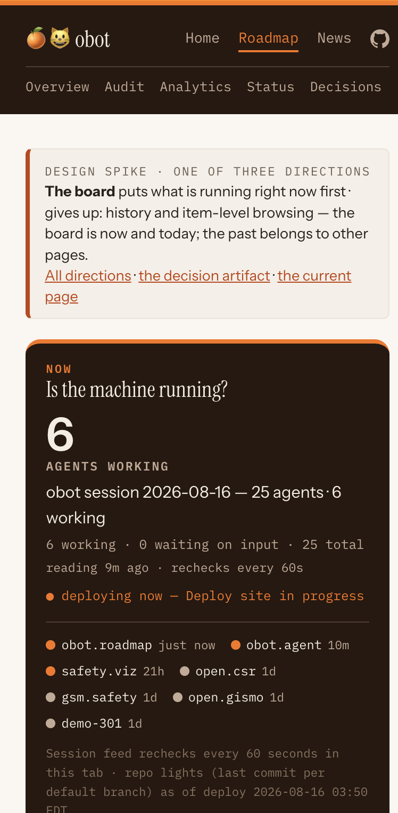

The roadmap page answers “what exists,” and you increasingly arrive as a reader who was away while agents worked. You asked for a design spike with options you can react to, so three genuinely different roadmap pages are now deployed on live data beside the current one. This page carries them side by side; your reaction, in the Q&A thread or in chat, is the decision.
“i'm good with your rec build”
The recommendation he approved is the one on this page, in the section above, and it is the spike’s own: “Make the queue the front page, keep the wire one click behind it, and absorb the board’s NOW panel as a slim strip on whichever page you land on. The current page survives as the catalog behind both — nothing about the inventory, the filters, or the hierarchy review lane is lost; it just stops being the front door.” It was written by the worker who built the three directions, formed from the rendered pages after all three were finished. It is also the only recommendation on record here: the concierge that carried the question to him offered none of its own, deliberately, so that the pages stayed the thing he reacted to.
Those words settle two of the three questions outright. The queue becomes the front page, with the wire one click behind it and the board’s NOW panel absorbed as a slim strip rather than surviving as a page (R1). The current inventory page survives as the catalog behind both, keeping its two composing filters and the hierarchy current-versus-proposed review lane, and stops being the front door (R2). They do not touch the third question, which is why the third is recorded separately below rather than folded in here.
“R3 is fine, leave it as approved”
R3 asks whether a fixed, labelled recent window is the accepted public answer to “what changed”, with the real “since you last looked” reserved for the local dashboard once it records last-viewed times. His first message did not mention it. The wire he approved is built with exactly that fixed seven-day window, says so on its face, and names the real personal signal as pending (#205) — so approving the wire implied accepting the fixed window. That was an inference and not a quotation, so it was written down as an inference and put back to him rather than counted with the other two. He confirmed it in the words above, and the fixed labelled window is now the public answer in his own words.
Why the two exchanges are kept apart on this page: recording all three as settled by the first message would have put words in his mouth on a published page, and nothing downstream would ever have caught it. The check is worth more than the answer it produced, so the record shows the sequence rather than the tidy version of it.
Follow-through: the rebuild is filed as its own requirement, #211, with his choice as the spec — the queue in front, the wire one click behind, the NOW strip absorbed, the catalog kept whole, and the spike harness taken out as part of the build rather than left for later. Requirement #202, which commissioned this spike, has delivered what it asked for and closes out on this decision. The three spike pages stay at their URLs until the rebuild ships.
Open the three pages on your phone — each is a working page on this morning's real data, not a mockup. Then answer in words, in the Q&A thread or in chat: which page do you want to arrive at, or which pieces of which. Quote a D0018 id if you want to be unambiguous.
The three pages came down on 2026-08-16, when this decision shipped as #211. Their links now forward to what each direction became — the queue and the board to the roadmap page, whose NOW strip is what the board contributed, and the wire to the wire. The 390px screenshots below remain the visual record of what was compared.
Every direction was built against the same test, set in the requirement: a reader coming back after two days must see what is waiting on them, what changed since they last looked, and what is running right now. The current page holds all of that as one filterable inventory; on the morning this spike was commissioned it surfaced none of the three things that mattered that day — requirements filed overnight and missing from the board, tasks with no requirement above them, and release candidates that had waited a day.
The three directions differ in what they put first, not in styling. Each answers the other two questions in a smaller way, or names plainly which one it gives up. None of them replaces anything yet: the current page is untouched, and every existing URL still works.
The page is your inbox, not a report. One ranked list of every item that cannot proceed without you, longest-waiting first: release candidates, open decisions, un-triaged ideas, stalled in-flight requirements, board drift, and release calls. Each card says what the thing is in plain words, why it is yours — what stays blocked until you act — and gives one action link. Items that have waited longer literally weigh more on the page: past a day they get an amber edge, past three days a red edge and a bigger age. What counts as waiting is exactly the current page's own arithmetic — same thresholds, same release dedupe — so this direction differs in shape, never in what qualifies.
On this morning's data it held 18 items, led not by the newest release candidate but by a requirement the board calls Review that nothing has touched in 24 days — which is the direction's argument in one row: the oldest debt surfaces first, not the loudest arrival. The review items re-check GitHub on every page load; the empty state is designed, not accidental — “Nothing is waiting on you,” and it only says so when every source actually read clean.
What it costs and forecloses: the front page stops being browsable — no inventory, no repo filter, no ad-hoc “show me everything about the chart library.” Its own line: it gives up the inventory — nothing here lets you browse everything that exists; the current page keeps that job.

The page is a newspaper of the roadmap: a day-grouped stream of what actually happened in the last seven days, newest first — releases shipped, pull requests merged, requirements filed, decisions asked and answered, ideas filed and promoted, audit findings. Every line is a dated fact from a real source with its citation trailing; the reading instruction is printed at the top: scroll until you hit something you already know — that point is caught up. A pinned box above the stream carries the waiting-on-you counts and names the single longest-waiting item, and one live line reports the session feed.
The window is fixed and says so — “the last 7 days,” a property of the page, not a guess about you. The only personal marker is a real timestamp this browser stored on a previous visit, rendered inline where it falls in the stream and labeled as this-device-only. Nothing computes a “since you last looked” window from a stand-in; the true cross-device signal needs the dashboard to record views, which is filed and pending (#205).
What it costs and forecloses: the present tense. Things appear here as events, not states — you can see that a release shipped Thursday but not what is mid-flight now, and the stream needs a scroll where the queue needs a glance. Its own line: it gives up right-now operational depth — the wire reports what happened, not what is mid-flight.

The page is a control room built for the 30-second phone check, in three bands. NOW: the live session feed rendered as the page's biggest element — this morning, six agents working out of twenty-five — with per-repo activity lights and their ages, refreshed every sixty seconds; past two hours of silence the panel stops asserting liveness and says how old the reading is, because confident numbers from a dead feed are worse than an honest “the feed died.” TODAY: what moved since midnight Eastern, with a plain deploy stamp. THE STANDING STATE: instruments, counts not lists — the waiting-on-you gauge, active requirements by stage as a labeled bar, each goal as a progress meter, the audit findings count — every one linking to the page that holds its detail.
What it costs and forecloses: depth of any kind. You cannot browse or catch up here — a count of seven waiting items is not the seven items — and the page's centerpiece inherits the health of the heartbeat feed it renders. Its own line: it gives up history and item-level browsing — the board is now and today; the past belongs to other pages.

The incumbent is a real contender, not an exhibit, and the honest version of the charge against it matters. It already opens with a Todo section — release candidates then decisions, re-checked live in the browser — and it already carries a seven-day Pulse view, an orphans list with exact counts, and a changelog that described the overnight requirement batch the morning this spike was commissioned. Two of the three famous misses that morning were prominence and data age, not absence: the page was built at 01:20 against a day-old audit ledger, and the answers it did hold sat below the fold of a phone.
What only it does: two filters that compose — any view crossed with any repo — so it answers questions nobody designed a page for; one page that is simultaneously the working view and the complete public record, which is what makes “run in public” checkable by a stranger; and the hierarchy section's current-versus-proposed review lane, which is working machinery for editing the roadmap's own structure, not a readout. Whichever direction wins, that lane and the full catalog need a home (question R2).
Its cost is the one this spike exists for: it is a reference document that answers “what exists,” and a returning reader must dig for “what needs me, what changed, what is running” — the three questions the directions each put first.
Make the queue the front page, keep the wire one click behind it, and absorb the board's NOW panel as a slim strip on whichever page you land on. The current page survives as the catalog behind both — nothing about the inventory, the filters, or the hierarchy review lane is lost; it just stops being the front door.
The reasoning, so you can disagree with the right part: the front page should lead with the one question that is an action rather than a reading — and “what needs me” is already the program's own review contract (release candidates, then decisions) rendered as a page. The wire is the best answer to your actual two-day absence, but catching up is a reading you choose, not a state you triage, so it earns the second click rather than the first. The board is the best glance and the thinnest page: its NOW panel is one strip's worth of content that any winner can carry without converging on a fourth design.
All three were built to equal depth and this call was formed after they were, from the rendered pages; the build did not favour it. React to the pages, not to this paragraph.
Which direction becomes the roadmap page — the queue, the wire, the board, the current page, or named pieces of named directions? A composite is a legitimate answer if you name the pieces: “the queue on top, the wire below it” is buildable; “something in between” is not.
If a new direction wins, does the current inventory page survive behind it as the catalog — one click away, keeping the complete filterable record — or does it retire? The three directions were all built assuming the inventory survives somewhere; retiring it entirely would change what they need to carry.
On the public page, is a fixed recent window — “what changed in the last seven days,” honestly labeled — the accepted answer to “what changed”? The public site records nothing per visitor, so a true “since you last looked” can only live on the local dashboard once it records real last-viewed times; that signal is filed and pending (#205). A page that guessed your window instead would be confidently wrong in exactly the way this program has paid for before.
Checks run on the deployed pages, not the local build. Silent success is this program's house failure mode, so each claim below names what was actually inspected.
| Claim | How it was checked | Result |
|---|---|---|
| Deployed and reachable | curl against every spike URL and eleven pre-existing site URLs after the publishing deploy (run 31934875758, success) | All 200. The landing page, all three directions, and every existing page including roadmap.html, the roadmap-next.html redirect, news, decisions, goals, audit, analytics, diary and reports. |
| No existing URL changed | Content markers on the live roadmap page after the deploy | roadmap.html still carries its Todo section and full structure; no generator for an existing page was touched. |
| Holds at 390 px | The deployed pages' bytes rendered in a real 390×844 viewport (iframe probe in Chrome — the same method every hub surface is checked with), measuring documentElement.scrollWidth and enumerating any element past the viewport edge | All four pages: scrollWidth 390 of 390, zero offending elements. The screenshots in each option section above are captures from that viewport. |
| Real data, not fixtures | Every page carries the deploy's own stamp; one fact per page cross-checked against the source of truth at read time | Pages stamped Generated 2026-08-16 03:50 EDT by the deploy that published them. The board's headline figures equal the session-state feed exactly (6 working · 25 total · 0 needing input, feed read 03:46 EDT); the waiting-on-you counts equal the live review-requested search — two release candidates, the gsm.safety v1.1.0 and open.gismo v0.2.0 RC PRs. |
| Nothing workspace-local published | Sentinel search over every deployed spike page, plus the deploy's own local-only guard on the same build | Zero hits. Every number on every page derives from public GitHub data or published feeds; counts only, by construction. |
One method note, stated so the record cannot overclaim: the numeric 390 px measurements ran against the deployed pages' fetched bytes re-served locally, because a cross-origin frame cannot be measured by script. Layout is a function of the bytes and the 390 px frame, and the client-side fetches (session feed, review re-check) ran live inside that frame — the screenshots show them populated.